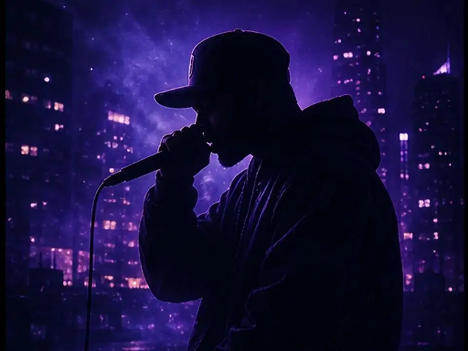
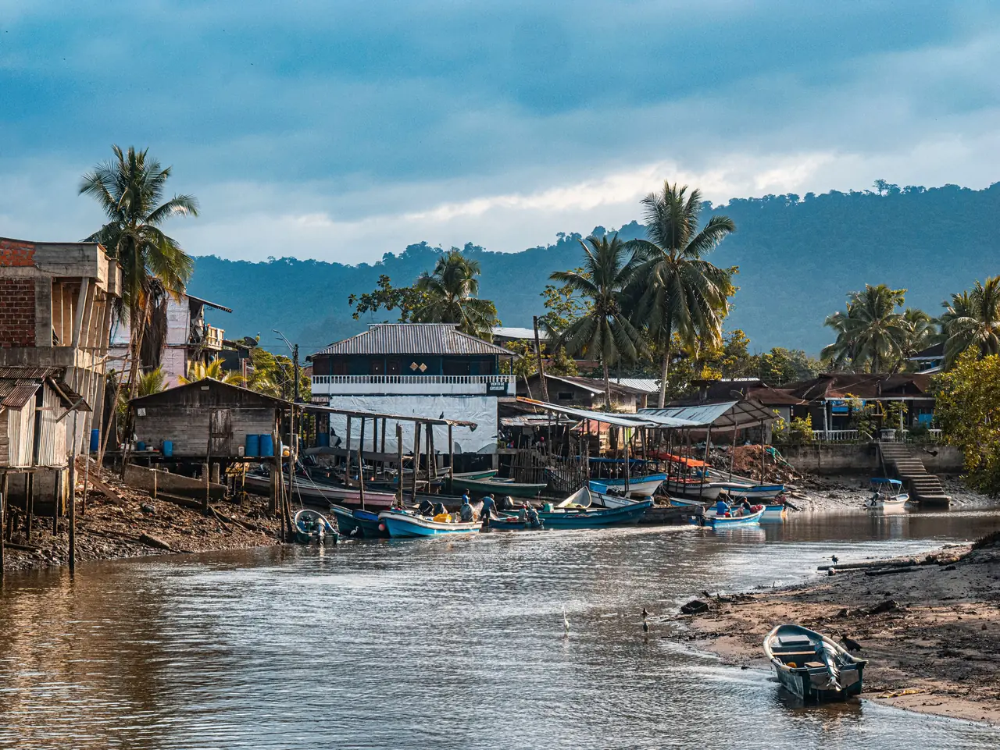
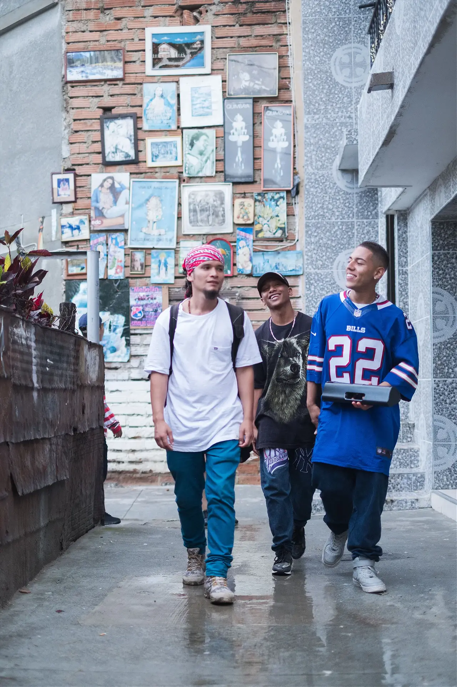
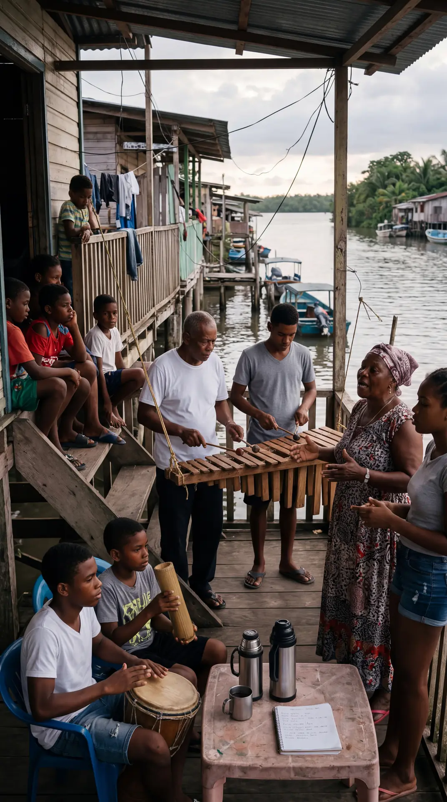
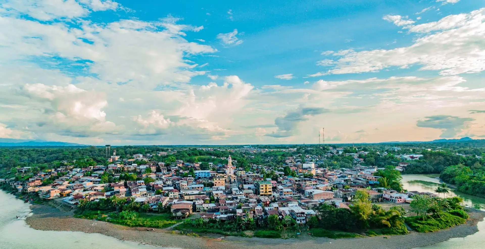

Propuesta · Serie documental musical
Una travesía entre el hip hop, la memoria y el territorio
Protagonizada por Rioloz
Una producción de
Desliza01 · Sinopsis
Rioloz es un artista de hip hop que creció en Estados Unidos, pero cuya historia familiar tiene sus raíces en Condoto, Chocó, Colombia. Su vida se ha construido entre dos realidades: la cultura musical y urbana que lo formó en el extranjero y la herencia de una familia cuyos orígenes permanecen ligados al territorio colombiano. En este viaje, Colombia deja de ser solo el lugar de origen de sus ancestros para convertirse en un espacio vivo de exploración artística.

Donde se formó
Estados Unidos
La cultura musical y urbana del hip hop. Una identidad artística propia, construida lejos.

Donde permanecen sus orígenes
Condoto, Chocó
La familia, la memoria y el territorio. Una historia heredada que pide ser escuchada.
02 · Concepto general
El hip hop como lenguaje para regresar a las raíces, escuchar el territorio y transformar la memoria en música.
La identidad no se construye únicamente desde el lugar donde una persona crece, sino también desde las historias que hereda, los vínculos que conserva y las preguntas que aparecen cuando decide conocer sus orígenes.

IPresencia urbana
Encuadres con carácter, movimientos de cámara motivados por la música y una relación directa con las calles donde vive el hip hop.

IIIntimidad documental
Cámara cercana, escucha activa y tiempo para que las emociones se desarrollen. En los encuentros familiares, acompañar sin invadir.

IIIIdentidad territorial
Planos abiertos, detalles de oficios y materiales, retratos de personas y sonidos que expresen la particularidad de cada lugar.
Urbana sin perder profundidad humana. Tradicional sin folclor superficial. Cinematográfica sin sacrificar la autenticidad de lo que sucede frente a la cámara.
03 · El recorrido
Cinco territorios,
un solo viaje
04 · El hilo conductor
Cuatro movimientos
05 · Identidad sonora
Cada territorio también se escucha
Primero escuchar, comprender y registrar. Toca un territorio para oír un boceto de su pulso y mira cómo cambia el color de toda la página.
Bocetos sintéticos e ilustrativos. En la serie, los sonidos se registran con sus intérpretes reales, con sus créditos y autorizaciones.
06 · Cinco visualizers
Una identidad audiovisual por canción
Piezas independientes de la serie, con concepto, intención estética y planificación propia. Diez canciones de referencia: cinco para los visualizers y cinco para el proceso creativo.
La asignación definitiva dependerá de las canciones: se privilegia la canción y la idea creativa sobre la distribución geográfica.
07 · Metodología
Cuatro etapas, un equipo base de dos
Dirección y realización
Jimmy Usma
Concepto creativo, investigación narrativa, dirección de entrevistas, seguimiento del artista y coherencia de la serie y los visualizers.
Fotografía y registro
Vladimir Sepulveda
Alias: ElMinchoImagen, planos de apoyo, entrevistas, ambientes visuales y sesiones musicales para los cinco capítulos y las cinco piezas.
Producción audiovisual
Fora Visual
Realizará la serie documental y los cinco visualizers, del rodaje al montaje final.
08 · Entregables
Capítulos documentales
Medellín, Cali, Bogotá, Buenaventura y Condoto, cada uno con identidad visual y sonora propia.
Visualizers musicales
Un concepto por canción, conectados por un mismo universo artístico.
Material complementario
Tráiler, fotos fijas y piezas para redes, sujetos a acuerdo.
09 · La visión final
No se trata solamente de registrar de dónde viene un artista, sino de acompañarlo mientras descubre qué significa ese origen para la persona y el músico que es hoy.
Un encuentro entre el rap, la memoria y la diversidad cultural de Colombia.
Volver al inicio ↑